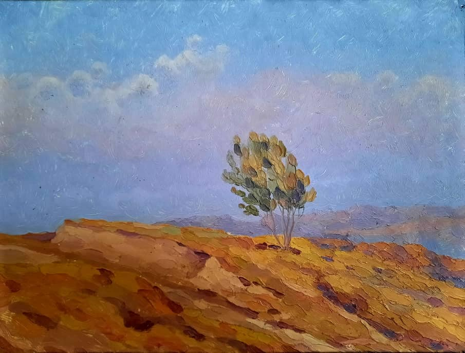

{% extends 'main/base.html' %}
{% block title %}
about
{% endblock %}
{% block content %}

Картина
"После окончания художественного училища я устроился охранником в творческую мастерскую живописи Народного художника СССР Гапара Айтиева. Это была своего рода аспирантура, и молодые художники, стипендианты, в течении двух-трех лет писали картины под руководством Мэтра. В то время учились уже проявившие себя, как талантливые живописцы Жоомарт Кадыралиев, Данакан Адашканова. Я же сторожил здание, где распологались мастерские. Не просто было получить эту работу, брали только по рекомендации, ибо ты имел возможность писать картины и услышать мнение Айтиева.
В августе того же года, по линии Союза молодых художников, я получил творческую камандировку на пленэр. И почему-то меня направили в городок энергетиков Кара-Куль. А когда туда приехал, в гостинице не было мест, там жили постановщики, актёры фильма "Мужчины без женщин" режиссёра, одного из корифеев Кыргызского кино, Альгимантаса Видугириса. И случайно встретил знакомого Латипа, с кем мы учились в училище. Он, оказывается, работал декоратором и предложил мне поселиться со съёмочной группой в каком-то арендованном ими помещении, на окраине города. В тот вечер они отмечали день рождения Юры-чутка (чекушка, ёмкостью для водки в четверть литра), так прозвали за его рост, который всю свою жизнь проработал водителем на "Кыргызфильме" и возил только шефов. Это была моя первая встреча с кинематографистами, которые меня поразили пьянством. Вроде бы, дело привычное, да и художники тоже славились алко-допингом. Но такой тотальный гудеж я видел впервые и возникала мысль, а как они в таком состоянии снимают кино...
В Кара-Куле находился филиал Политехнического института, где проректором работал мой односельчанин Сагынбек Жумагулов и байке дал мне небольшое помещение, где я жил и продолжил свой пленэр.
А когда довольный вернулся в мастерскую, чтобы показать каракульские этюды, Гапар Айтиев даже не взглянул на них, он был не доволен тем, что я самовольно уехал в командировку. Ему не нравилось, когда пишут пейзажи, и об этом говорил не раз в своих мимолетных встречах со мной. Он хотел, чтобы художники создавали станковые картины, а я ведь к нему стремился, как Мастеру пейзажа. И мне пришлось оставить работу...
Видимо, судьба. И в поисках хлеба насущного, пришёл к тем, кто мне не нравился, на киностудию. Каридин Акматалиев снимал свой "Тринадцатый внук" и, к счастью, художники-постановщики Жолдошбек Касымалиев и Суйюнбек Мырзахматов, посмотрев мои этюды, взяли меня декоратором. Позже работал со всеми, с кем встречался в Кара-Куле, на самом деле, они профессионалы своего дела и сегодня редко встретишь таких специалистов. А с Юрой тоже не раз пересеклись, когда состарилась его Волга, он был прикреплён к производственному отделу и кому нужна была машина по городу, ездили с ним".
{% endblock %}